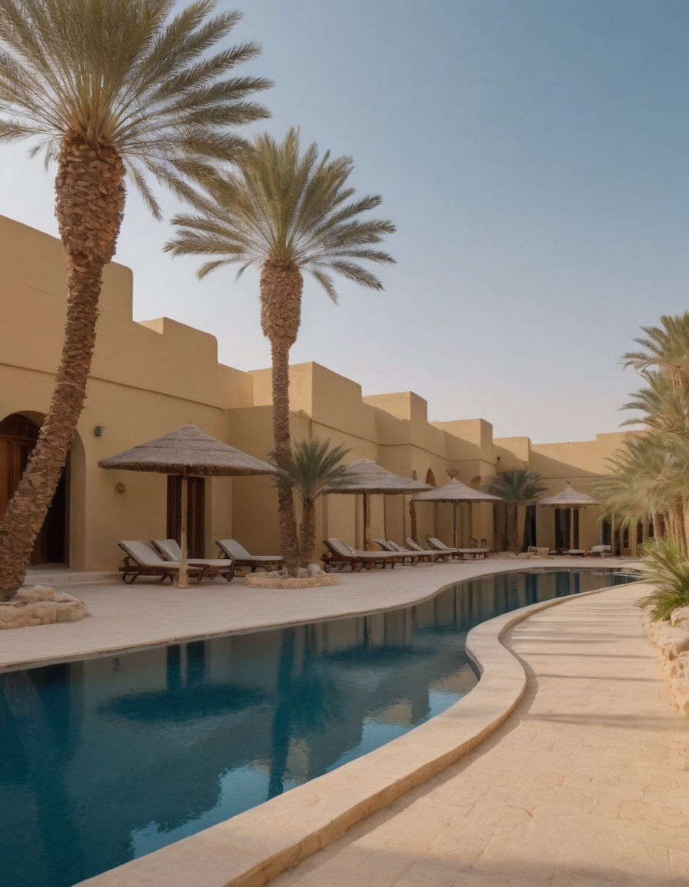
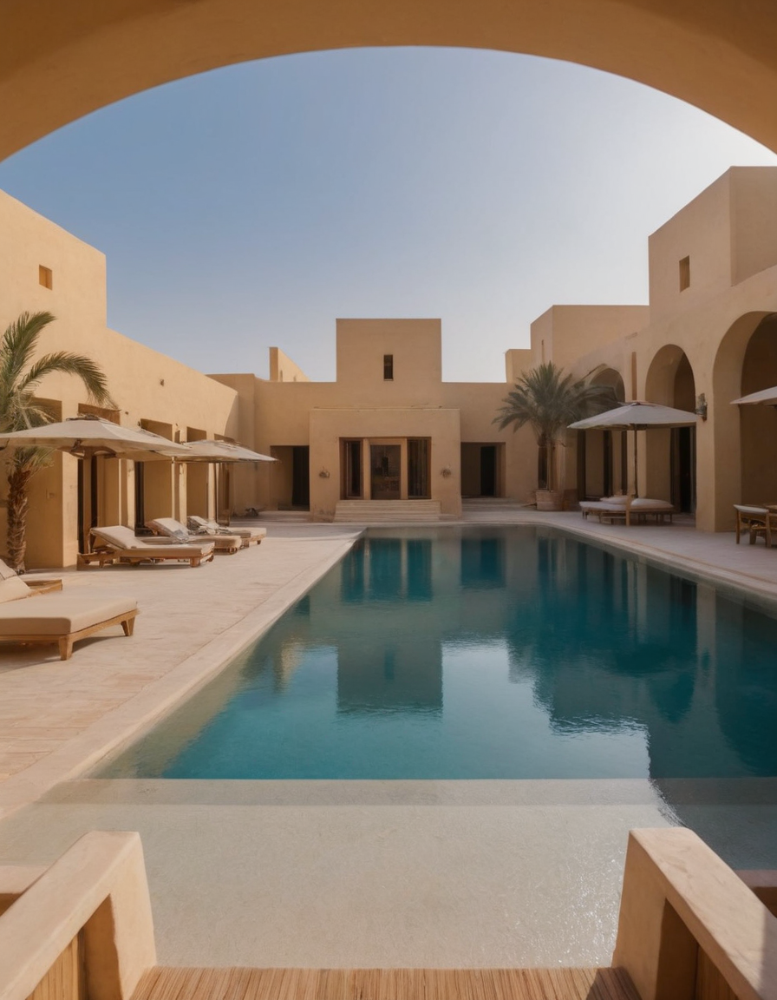
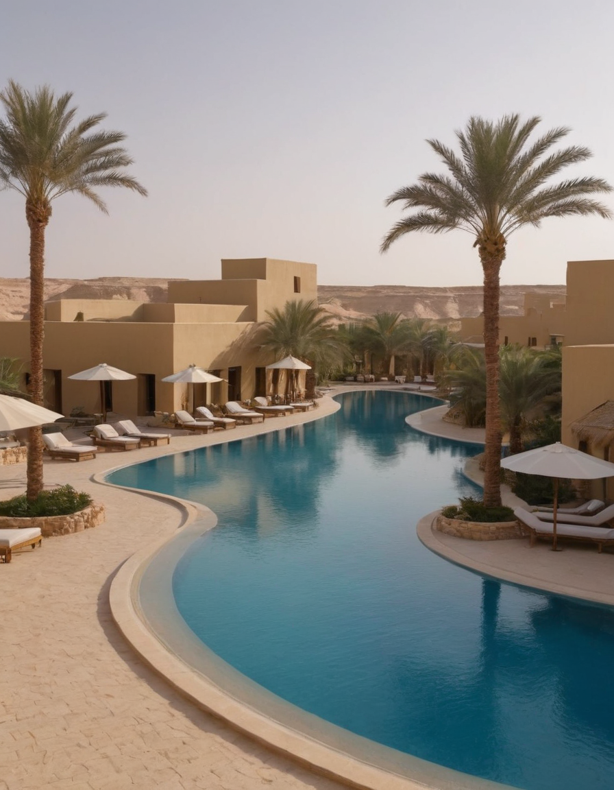

At Siwa Oasis Hotel & Resort, our vision is to become a beacon of tranquility and rejuvenation amidst the breathtaking beauty of the Siwa Oasis. We strive to offer a sanctuary where guests can immerse themselves in the timeless allure of the desert landscape, while experiencing unparalleled hospitality and personalized service.



Our mission at Siwa Oasis Hotel & Resort is to create unforgettable experiences for our guests by blending traditional Egyptian hospitality with modern comforts and amenities. We are dedicated to preserving the natural and cultural heritage of the Siwa Oasis, while providing a range of exceptional services and activities that cater to the diverse needs and interests of our visitors.
Through our commitment to sustainability, community engagement, and excellence in hospitality, we aim to exceed the expectations of every guest who chooses to journey with us into the heart of the desert oasis.